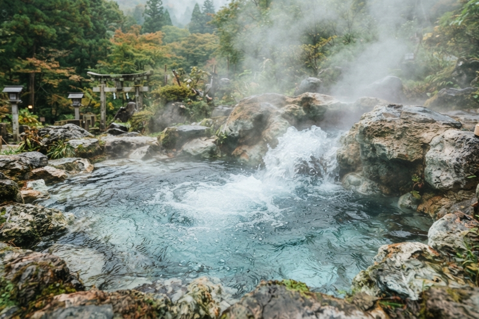

温泉
spa

湯に癒され、心ほどける。
趣の異なる大浴場と十二の貸切風呂。
がしみや荘ならではの湯めぐりをご堪能ください。
大浴場
public spa
木々や庭園を望む開放的な2種類の大浴場。
心と身体をゆっくり癒す温泉をご紹介します。

大桜の湯

大滝の湯
※ご利用時間 チェックイン～翌2:00、5:00～チェックアウトまで
※2:00に男女入替となります。
貸切風呂
private spa
趣の異なる12種類の貸切風呂をご用意しております。
予約不要・24時間・無料で何度でもご利用いただけます。
内風呂
 琥珀
琥珀
 紫苑
紫苑
 瑠璃
瑠璃
 黒墨
黒墨
 萌葱
萌葱
 浅葱
浅葱
露天風呂
 紅殻
紅殻
 乳白
乳白
 翡翠
翡翠
 黄蘗
黄蘗
 朽葉
朽葉
 白泥
白泥
※貸切風呂は24時間ご利用いただけます。
※予約制ではありません。
※空いていたら木札を「入浴中」にしてご利用ください。
湯巡りスタンプラリー
stamp rally

各貸切風呂には御朱印が置いてあります。
ご希望の方には押印用の手ぬぐいを無料でお渡しいたします。
12種類すべてのお風呂を巡った方には、オリジナル記念品をプレゼント。
源泉と湯畑
hot spring source


湯の生まれる場所
がしみや荘の湯は、敷地内から湧き出す自家源泉から始まります。 豊かに湧き出した湯は湯畑へと集まり、湯けむりを上げながら ゆっくりと流れていきます。
立ちのぼる湯けむり、湯の音、ほのかに感じる温泉の香り。 湯に浸かるだけではなく、温泉が生まれる風景そのものも お楽しみください。
源泉の恵みを利用して作る、がしみや荘名物の温泉卵。 湯上がりのお楽しみとしてもご賞味いただけます。
温泉神社
onsen shrine

湯の恵みに、感謝を。
庭園の一角にひっそりと佇む、がしみや荘の温泉神社。 この地に湧く温泉の恵みに感謝し、旅の無事や健康、 良き湯とのご縁を願う場所です。
湯めぐりの途中に立ち寄り、静かに手を合わせる。 温泉に癒された一日の終わりに、旅の思い出とともに お参りください。